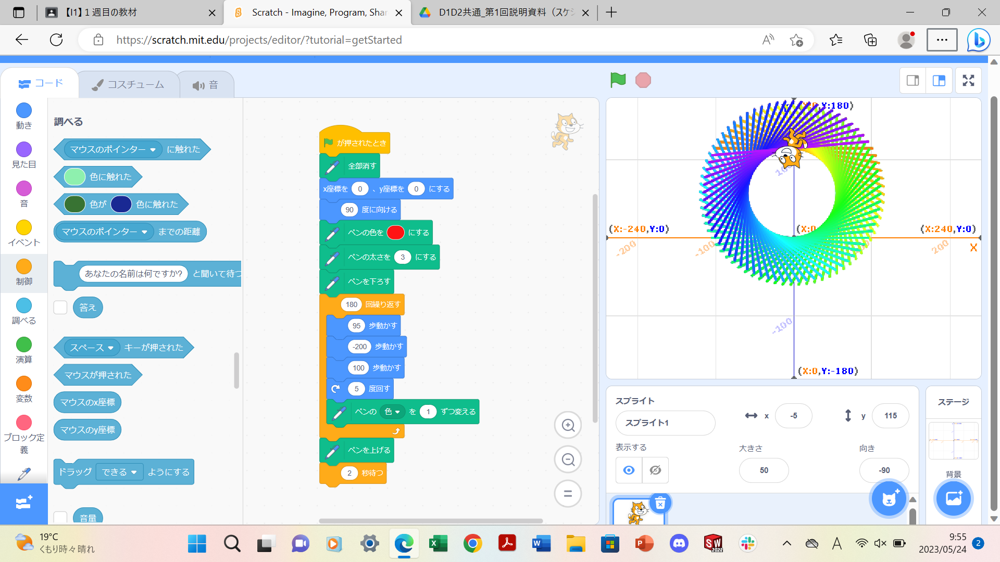

1-1 サイエンスアート

1.内容
スクラッチを使って線を書くプログラムを作った。スタートボタンが押された時に、今まで書いたペンの跡を消し、猫の位置を(x.y)=(0.0)の位置に移動させる。そして、猫の向きを90度方向に向ける。ペンの色を赤に設定し、太さを”3”に設定し、ペンを下ろす。制御ブロックの繰り返しで、｛猫を95歩前進させる。その後、-200歩猫を動かし、100歩前進させ、猫を5度回し、ペンの色を1ずつ変更させる。｝というのを180回繰り返す。（｛｝は繰り返しブロックの中のブロックを表す。）ペンを上げ、2秒停止させるプログラミングを作った。
2.感想
前回のE1の実験実習で、マイコンを使ったプログラミングをしたため、SlackのプログラミングはE1で初めてプログラミングをした時よりも、楽にI1のプログラムをすることができた。やはり、何事にも「慣れ」や、練習をするこてが
大事だと思った。